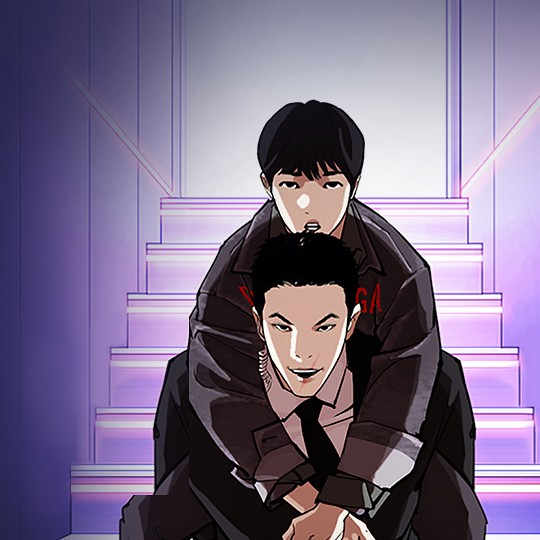

漫畫推薦
漫畫推薦
1. 流氓讀書會
2. 囧途人生
3. 盜臉人生
4. Sweet Home
5. 看臉時代
1. 流氓讀書會
講述著即使不是讀書的料也一心想要讀好書、考上好大學的高中生「尹佳敏」，
在流氓學校中創立了讀書會並尋找和他一樣向上的朋友的故事！
光看上述的劇情簡介你們可能會以為《流氓讀書會》是那種描寫傻男成功逆轉人生的漫畫，
但其實它的重點則是在於當主角遇見阻饒他的人時，便會脫去宅宅的形象變身為武力值爆棚的魅力男！
反轉魅力的亮點也讓許多人在看了第一集後便秒入坑。
2. 囧途人生
由《看臉時代》的朴泰俊作家與《青春白卷》的田善旭作家聯合打造！
校園動作網漫《冏途人生》講述著於職場遇見學生時期霸凌自己的「張安哲」後，
瞬間覺得人生再度變得一團糟的「金振友」便對其詛咒：「你也該嚐嚐被霸凌是什麼樣的滋味！」，
萬萬沒想到該詛咒不僅真的生效，還讓霸凌者靈魂穿越到過去被他自己霸凌的金振友身上。
在因看著他對上自己的爆笑橋段而哭笑不得的同時，也能讓人體悟到這個社會中弱肉強食的現實。
3. 盜臉人生
講述著從小因外表不佳而飽受各種折磨的主角，在心灰意冷到決定輕生時，
竟意外獲得「換臉」機會的故事。比起上述幾部漫畫的情情愛愛，
在《盜臉人生》中則可以看見更多貼近於現實甚至是考驗人性的問題！
\而除了首篇之外，後續篇章的角色、發展也都不盡相同，非常值得一看。
4. Sweet Home
恐怖懸疑網漫《Sweet Home》講述著因校園暴力傷害而足不出戶的「車賢秀」，
原本打算等喜歡的動畫上映後便自我結束生命，沒想到公寓外卻突然被未知的生命體侵襲！
不得已開始走出房門生活的他，也就此激起求生意志與倖存的居民們一同面對各種懸疑事件。
5. 看臉時代
一說到WEBTOON韓漫推薦，當然就少不了許多人的入門款《看臉時代》啊～
講述著因相貌平平而遭到霸凌的「玄碩」，一夜之間卻奇蹟降臨變成萬人迷校草的故事。
從刻畫鮮明的人物角色、引人入勝的故事情節到諷刺意味濃厚的寫實議題，
若時間不多只能追一部韓漫的話，《看臉時代》絕對是你的最佳選擇。
